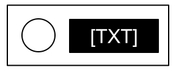

Appendix A: Indicator Identification Reference
Labelled indicator lights can be found on the sides of the bomb casing and are either lit or unlit.

A lit indicator

An unlit indicator
Indicators are labelled with three letters. Duplicates of an indicator label will never appear on a bomb*.
Common Indicators
- SND
- CLR
- CAR
- IND
- FRQ
- SIG
- NSA
- MSA
- TRN
- BOB
- FRK
Rare Indicators
- NLL*
*NLL indicators only appear if all 11 common indicators are present on the bomb. If more than 12 indicators are present, multiple NLL indicators will be present.